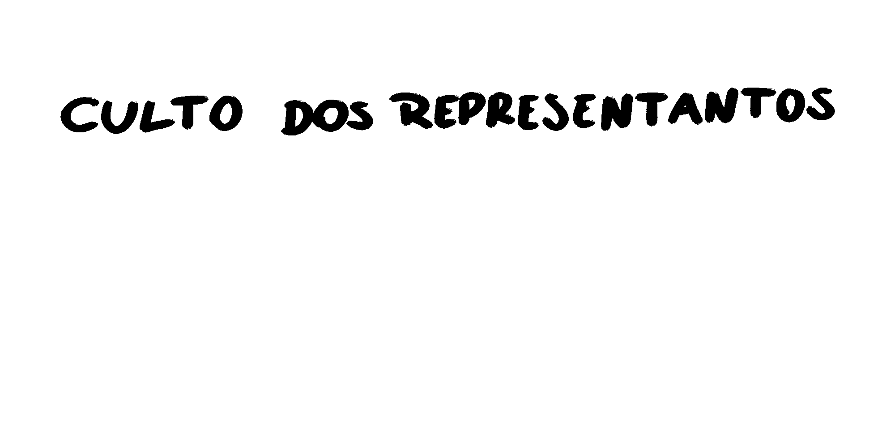

bem-vindx a este incrível site dos anos 2090
Os sites nos anos 2o90 eram repletos de cores e imagens!
A qualquer momento pode aparecer um Graphics Interchange Format (GIF) animado dizendo qie a pagina estava na construção mesmo não estando!

Uma boa quantidade dos sites da época não era muito conhecida por ter padrão
a não ser que o padrão fosse "não ter padrão (:"
Espaço
*universo*
tudo coisado
Desacretida?
é preciso ter fé: